NOT EVERYTHING NEEDS TO BECOME A PROJECT.
SIDE QUESTS
THE MAIN STORY
ISN’T EVERYTHING.
Running, racket sports, music, places, photographs, and the random things I end up caring about when I’m not staring at a design file.
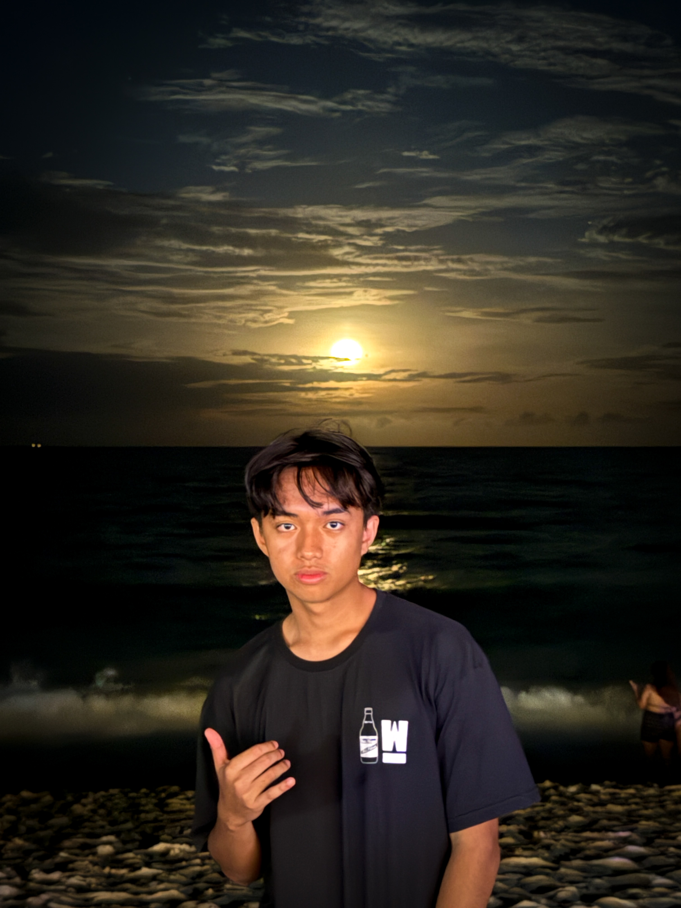
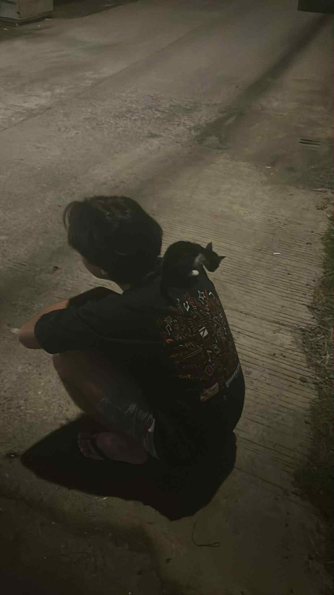
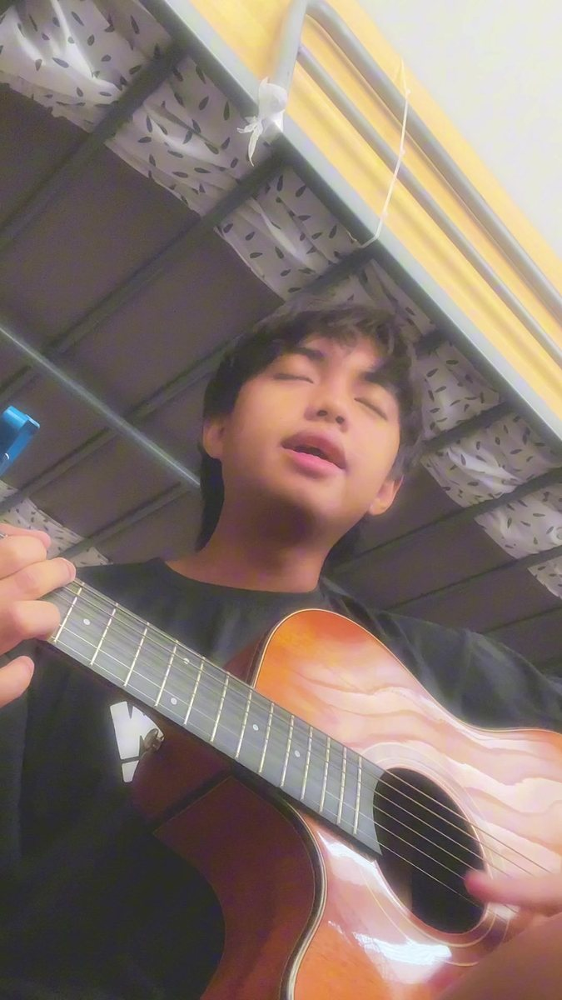
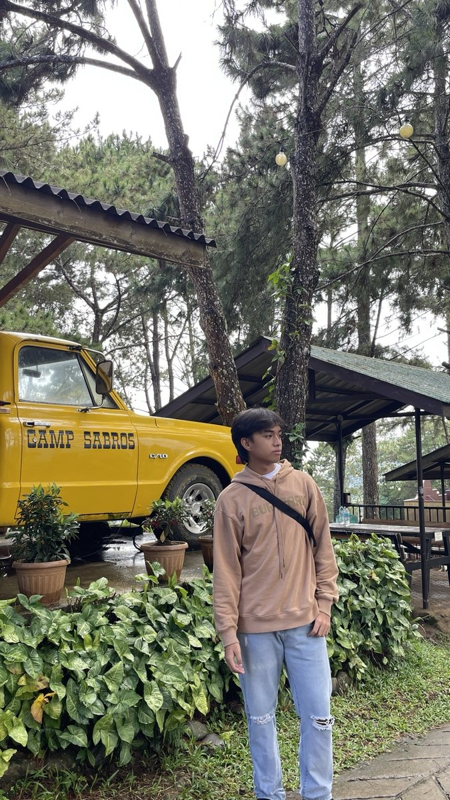
QUEST 01 / LIFESTYLE
FITNESS
LIFESTYLE
Trying to get fit is one of my main goals to be honest. But trying to STAY fit is harder haha.
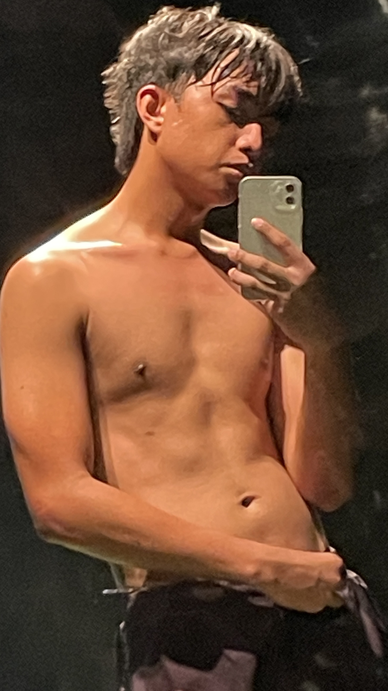
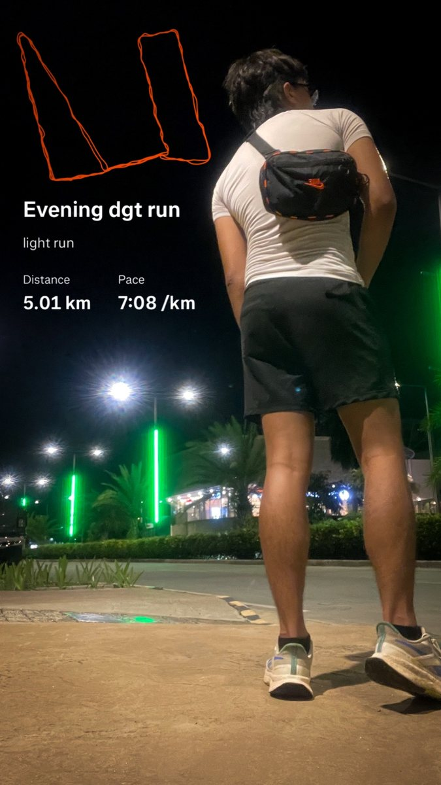
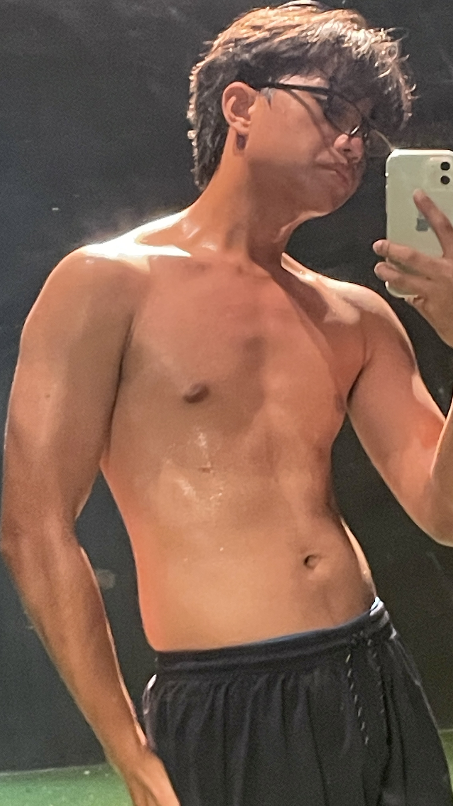
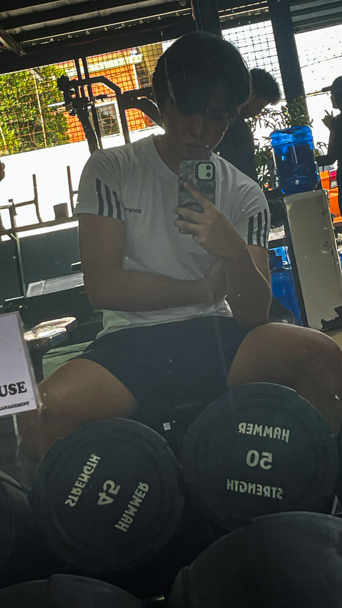
QUEST 02 / RACKET SPORTS
COURT DAYS.
BAD SHOTS INCLUDED.
Pickleball and tennis scratch a different part of my brain — movement, timing, competition, and the deeply humbling experience of completely missing the ball.
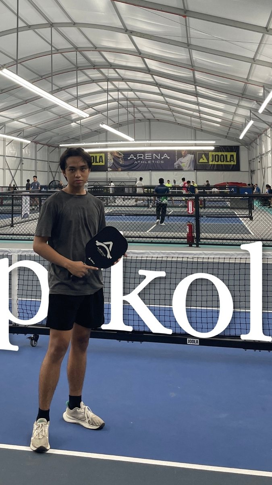
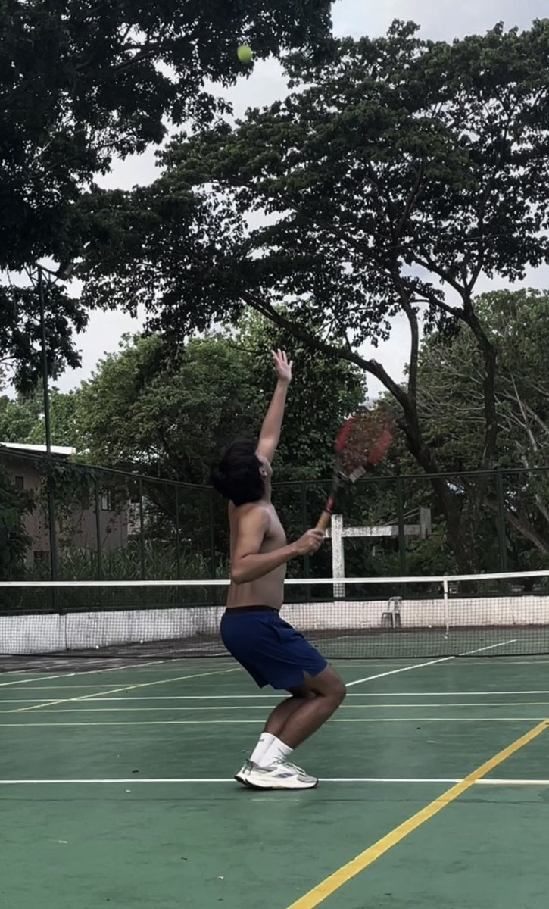
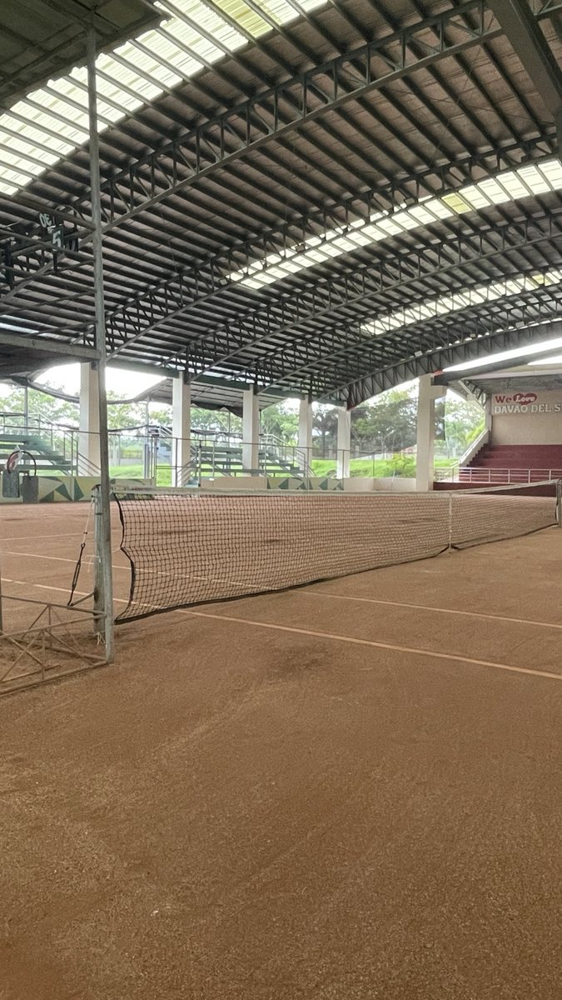
PICKLEBALL / TENNIS / COURT DAYS / TRY AGAIN
QUEST 03 / MUSIC
SING IT.
PLAY IT LOUDER.
Guitar, vocals, live stages, and the occasional clip I record just because it felt good.
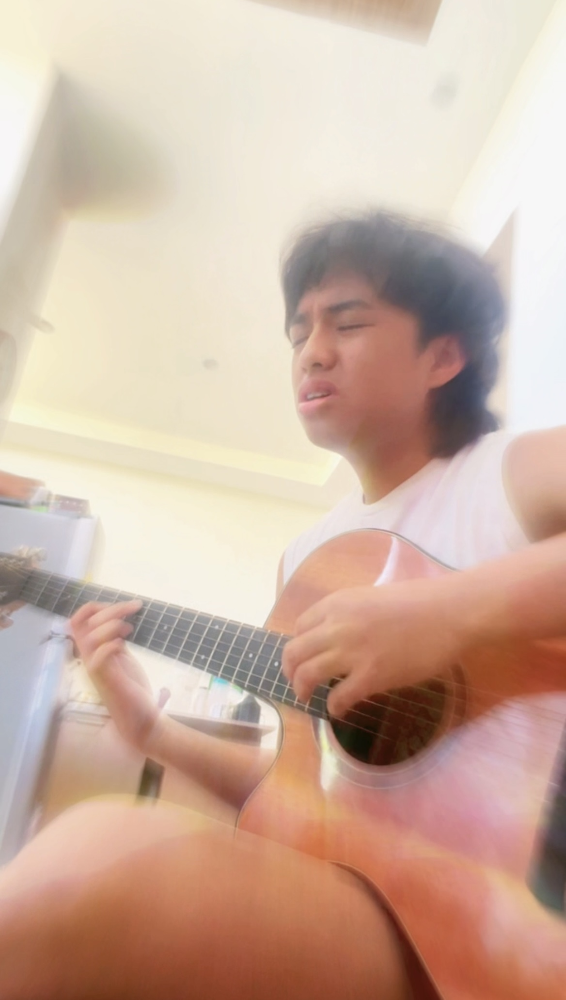
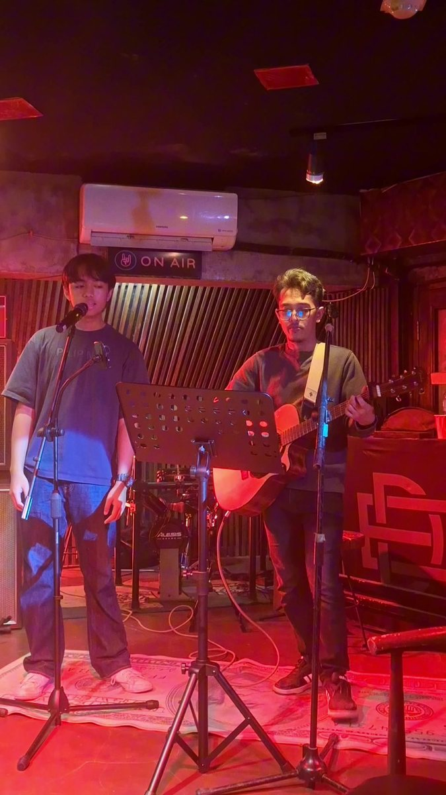
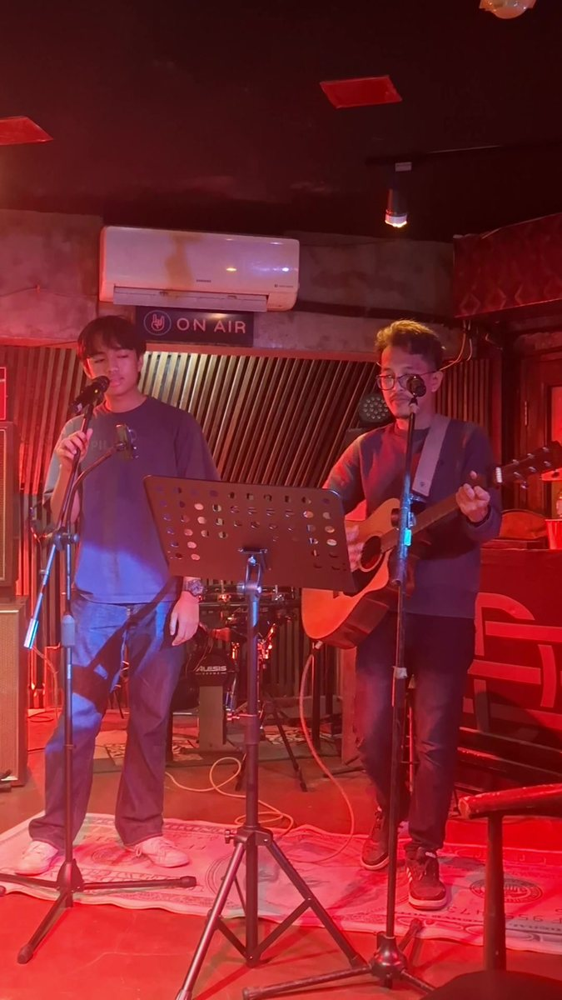
QUEST 04 / OUT THERE
TOUCHED GRASS.
SURVIVED.
Places, random photos, quiet moments, and whatever looked interesting enough to make me stop for a second.
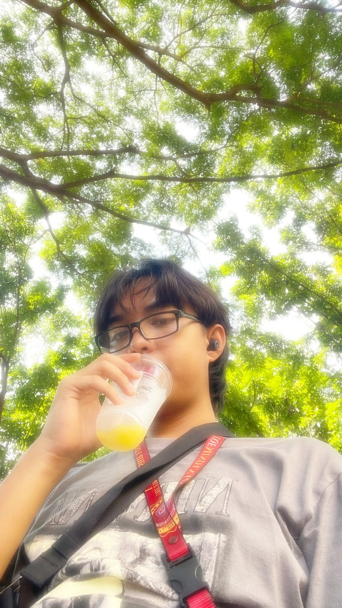
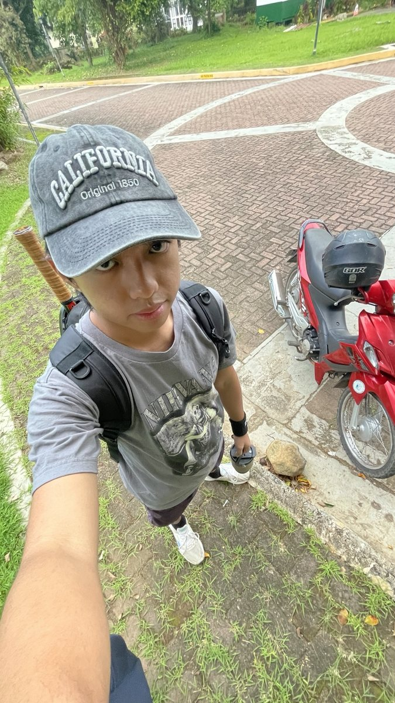
SIDE QUEST COMPLETE. +10 STAMINA. +1 STORY.
PHOTOGRAPHY / CLAY / SKETCHES / EXPERIMENTS — THE ARCHIVE KEEPS GROWING.